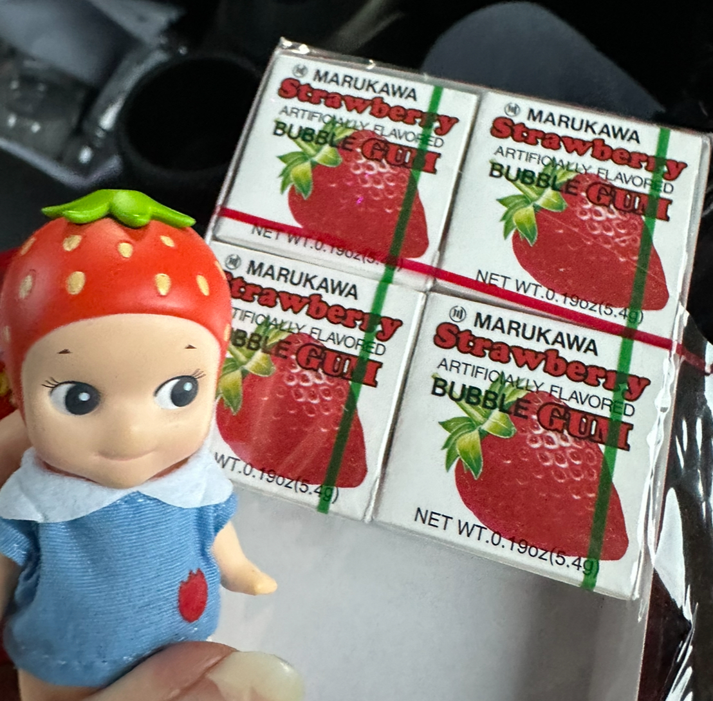

Hi! I'm Jasmine and...
I'm a current undergrad studying Computational Cognitive Science, an IT Assistant for Unitrans, and an aspiring AI/ML engineer! I'm deeply fascinated with the intersectionality of Machine Learning and Artificial Intelligence to the point of being involved in an education initiative for students and educators to share my knowledge and passion. I'm involved with the Girls Who Code club as a board lead and Project Manager, and the Artificial Intelligence Student Collective as an Education Associate. My profile picture is currently my cool dog Mocha who recently passed from lymphoma, he was always very photogenic.
My Interests
My hobbies include gaming, reading research, studying languages (human and programming ones), and collecting Sonny Angel figurines. The picture shows my strawberry Sonny Angel figure posing next to some strawberry gum. I currently have about 40 of these kewpie angels that resemble the Cupid-like babies you sometimes see in religious art and architecture. Some games I've been playing recently are ARK Survival Evolved, pass-time puzzle games like Wordle and Sudoku, Stardew Valley, Animal Crossing New Horizons, and Lethal Company. On research, I like reading research papers by the professors I have in any given quarter and articles by the MIT Tech Review.